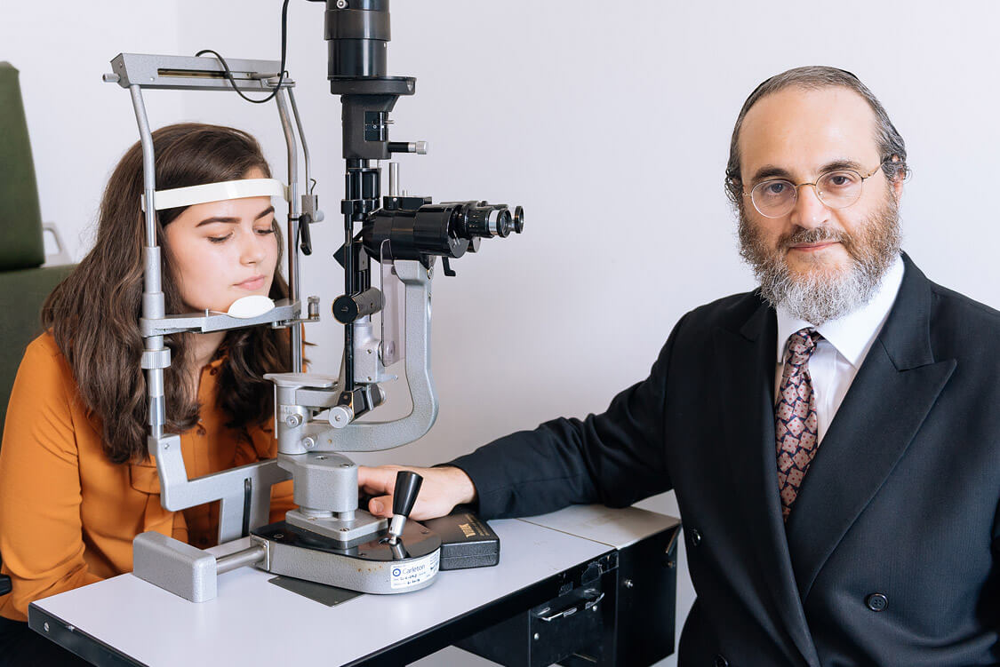
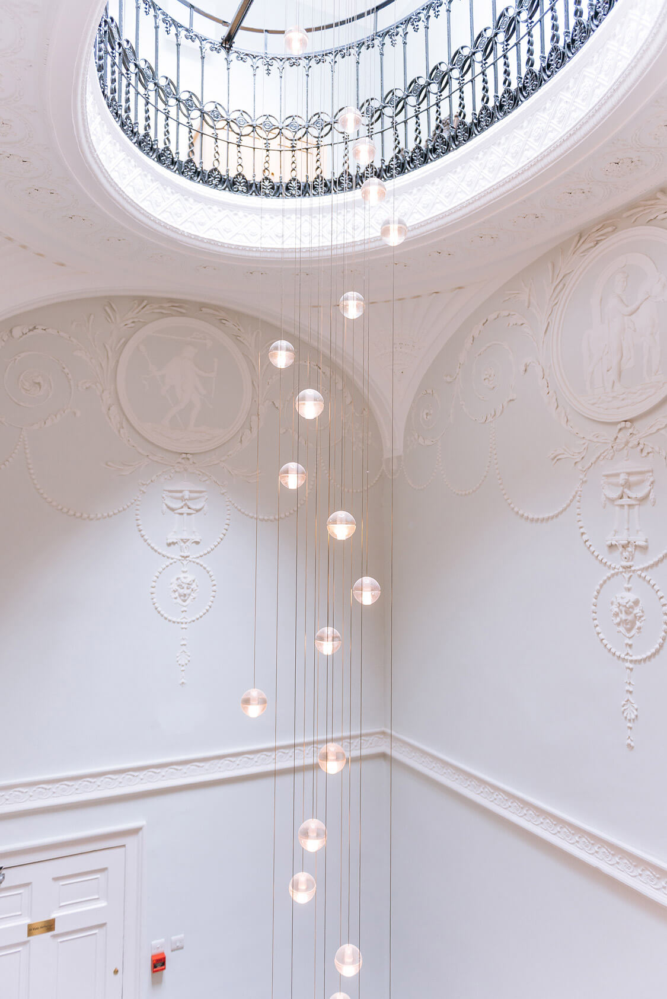
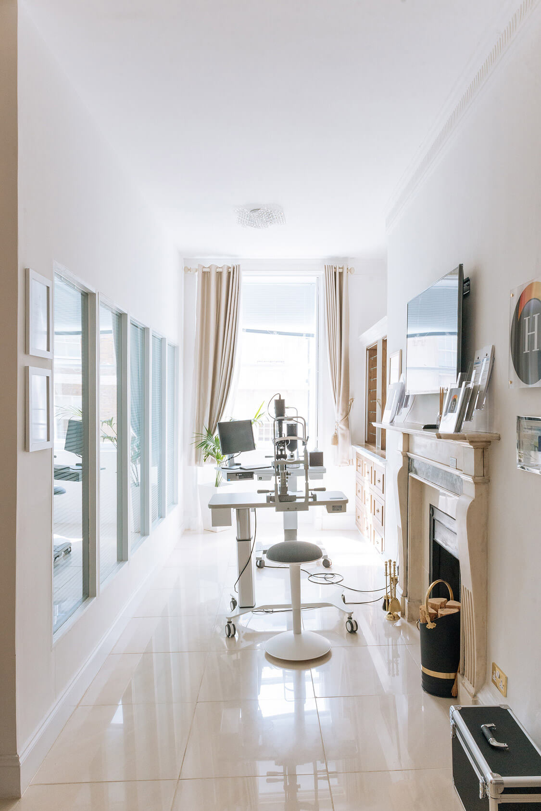
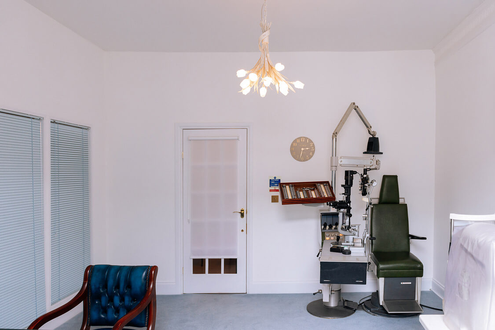

About the clinic
The office has been home to four generations of ophthalmologists. Prior to
Mr. Philip Starr, it contained the offices of Sir Stewart Duke Elder, the ophthalmogist to Her Majesty the Queen, and a blue plaque on the outer wall commemorates him.




The London Eye Clinic is a classic 1920’s Art Nouveau building,one of the few complete houses left in the Harley Street area. It has seen hundreds of thousands of patients visit for their treatment over the past seven decades.